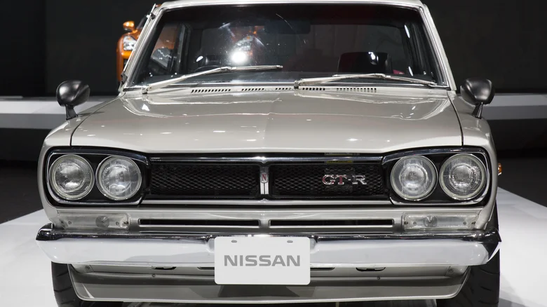
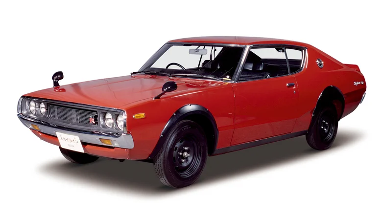
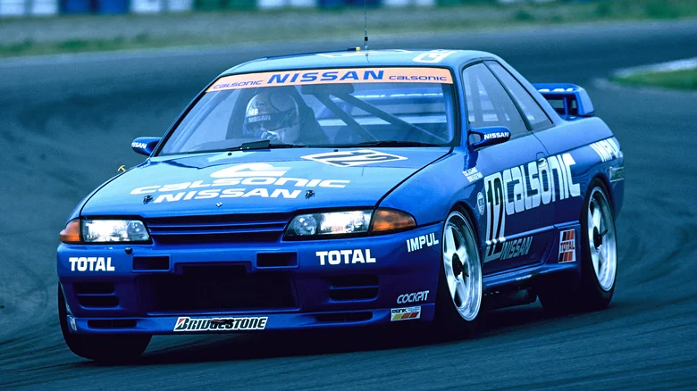
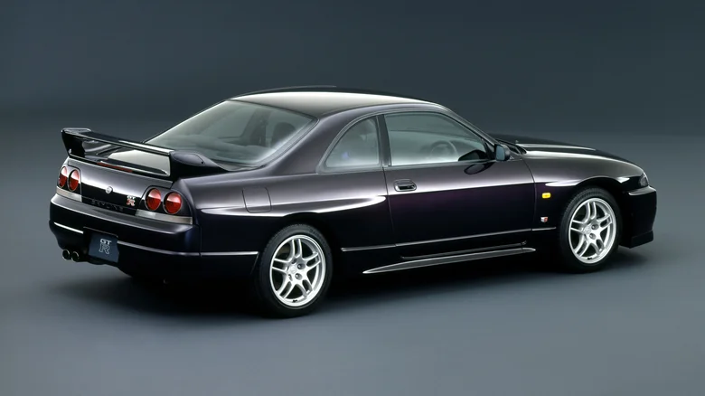
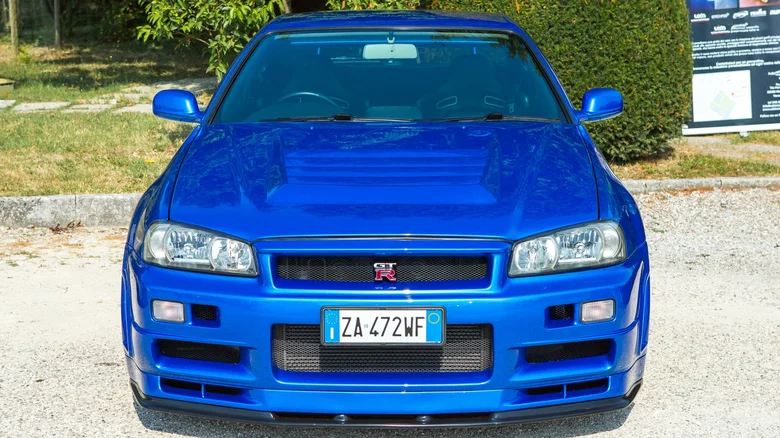
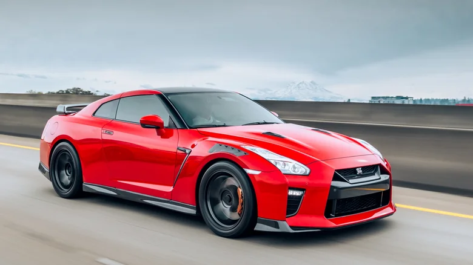

The Nissan GT-R, originally known as the Nissan Skyline GT-R, has a rich history that dates back to 1969 when Nissan first introduced the Skyline GT-R as a high-performance variant of its Skyline sedan.
The GT-R badge stands for "Gran Turismo Racer," highlighting its racing origins.
 |
|---|
was produced from 1969 to 1972 and featured a 2.0-liter inline-six engine that produced around 160 horsepower.
It quickly gained a reputation for its performance on the racetrack, winning multiple races in Japan.
 |
|---|
In 1973, the second-generation Nissan Skyline GT-R, the KPGC110, was introduced with an improved engine, better aerodynamics, and enhanced performance.
However, due to the oil crisis and tightening emissions regulations, production of the GT-R was halted in 1973, marking the end of the first era of the GT-R.
 |
|---|
It was not until 1989 that Nissan revived the GT-R badge with the introduction of the R32 Skyline GT-R.
This third generation GT-R became an icon in the automotive world, known for its advanced technology and exceptional performance. The R32 GT-R featured a 2.6-liter twin-turbo inline-six engine known as the RB26DETT, producing 276 horsepower (though actual output was rumored to be higher).
The R32 GT-R dominated the Group A racing series and earned the nickname "Godzilla" for its dominance on the track.
 |
|---|
The evolution of the GT-R continued with the R33 Skyline GT-R in 1995, featuring improvements in aerodynamics, handling, and performance.
The RB26DETT engine was retained in the R33, but with minor upgrades to improve power and efficiency.
 |
|---|
In 1999, the R34 Skyline GT-R was introduced, further refining the performance and handling characteristics of its predecessors.
The R34 GT-R featured improvements in aerodynamics, suspension, and braking systems, making it one of the most capable performance cars of its era. The RB26DETT engine in the R34 was also upgraded to deliver more power and torque.
 |
|---|
In 2007, Nissan dropped the Skyline badge from the GT-R lineup and introduced the standalone Nissan GT-R with the R35 model.
The R35 GT-R represented a significant departure from its predecessors, featuring a new design and a more advanced technology package. The R35 GT-R was powered by a 3.8-liter twin-turbo V6 engine known as the VR38DETT, producing over 480 horsepower in its base form.
Over the years, Nissan has continued to update and improve the GT-R, offering different performance levels, special editions, and limited-run models.
The GT-R has become synonymous with high performance, technological innovation, and precision engineering, solidifying its place as a legendary sports car in the automotive industry.
The Nissan GT-R has also made a name for itself in motorsports, competing in various racing series around the world, including the Super GT series in Japan and the GT500 class.
The GT-R's racing success has further enhanced its reputation as a formidable performance machine both on the track and on the road.
In conclusion, the history of the Nissan GT-R is a storied one, spanning over five decades and multiple generations of high-performance sports cars. From its humble beginnings as a high-performance variant of the Skyline sedan to its evolution into a standalone model with cutting-edge technology and impressive performance, the GT-R has solidified its place as a true icon in the automotive world. With each new iteration, the GT-R continues to push the boundaries of performance and innovation, leaving a lasting legacy as one of the most revered sports cars of all time.